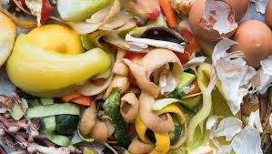

Jenis-Jenis Limbah dan Cara Daur Ulang
Plastik
Pisahkan limbah plastik bersih dari yang kotor. Gunakan kembali atau kirim ke pusat daur ulang plastik terdekat.
Pelajari SelengkapnyaKertas
Lipat dan simpan kertas bekas. Kirim ke bank sampah atau pusat daur ulang untuk diolah kembali.
Pelajari Selengkapnya
Kaca
Kumpulkan kaca yang utuh atau pecahan secara aman. Kirim ke fasilitas daur ulang kaca.
Pelajari SelengkapnyaLogam
Pisahkan limbah logam seperti kaleng, aluminium, atau besi untuk didaur ulang secara efisien.
Pelajari SelengkapnyaElektronik
Kumpulkan perangkat elektronik rusak dan kirim ke pusat daur ulang e-waste terdekat.
Pelajari Selengkapnya

Organik
Gunakan limbah organik untuk kompos yang bermanfaat bagi tanah dan tanaman.
Pelajari Selengkapnya